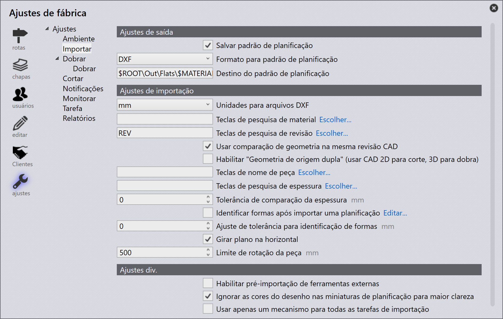
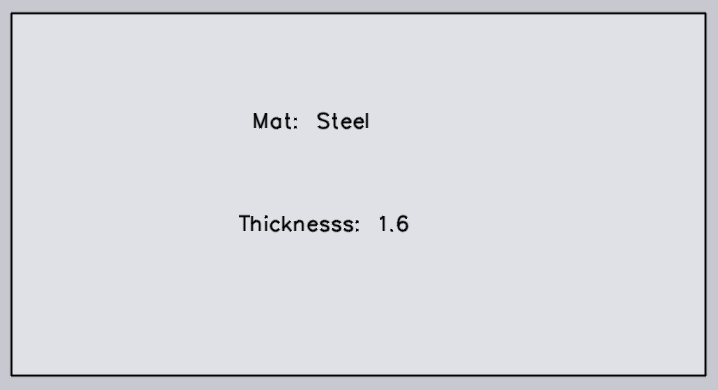
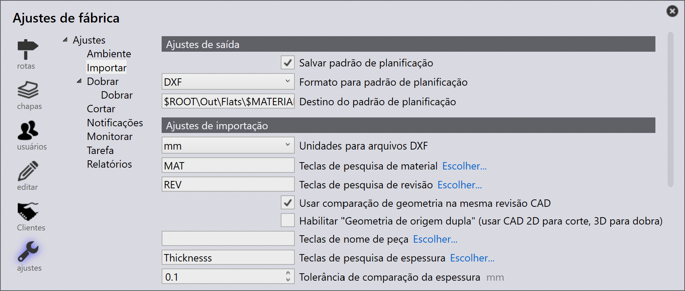
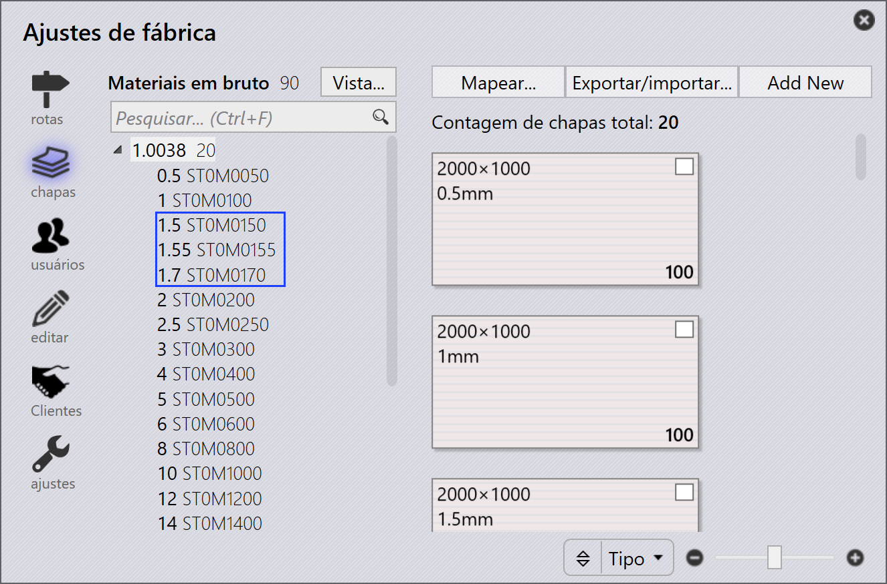
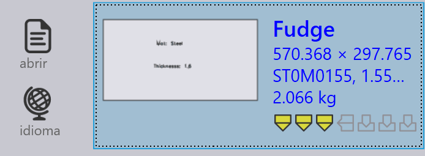

Importação

Output settings
Save flat pattern - Habilite esta opção para que o padrão planificado de uma peça importada seja salvo.
Format for flat pattern - Esta opção é usada para escolher entre os formatos de arquivo DXF ou GEO.
Flat pattern destination - Este é o local onde o padrão planificado será salvo.
Import settings
Units for DXF files - Esta é a unidade de medida com a qual um arquivo DXF será importado. O usuário pode escolher entre mm ou polegada.
Material lookup keys - Múltiplas entradas de consulta podem ser atribuídas usando um separador de vírgula entre elas. Quando uma peça é importada, o TruSmartCAM usa essas chaves para buscar valores de material. Os valores encontrados são então usados para resolver a matéria-prima. Os valores originais são armazenados nas propriedades diversas da peça.
Revision lookup keys - Quando uma peça é importada, o valor de revisão do arquivo de peça bruto (o arquivo de peça sendo importado) é comparado com o valor de revisão existente no repositório. A importação é abandonada se a revisão for a mesma. O mapeamento de campos personalizados agora também é suportado para arquivos DXF. Para arquivos DXF, os dados de campo personalizado são extraídos da camada de texto no desenho ou de um anexo PPI.
Use geometry comparison on same CAD revision - Compara a geometria ao importar uma peça com a mesma revisão CAD e solicita ao usuário substituir ou pular a importação se diferenças forem detectadas. Consulte Import configuration para mais detalhes.
Part name keys - Esta opção funciona de forma semelhante às chaves de material e Revision lookup keys. Defina uma ou mais Part name keys para usar o Part name do PPI em vez do nome do arquivo como nome da peça.
Thickness lookup keys - Múltiplas entradas de consulta podem ser atribuídas usando um separador de vírgula entre elas. Quando uma peça é importada, o TruSmartCAM usa essas chaves para buscar valores de espessura. Os valores encontrados são então usados para resolver a espessura. Os valores originais são armazenados nas propriedades diversas da peça.
Thickness comparison fudge - Isso é usado na consulta da matéria-prima quando uma peça é importada. O TruSmartCAM tenta resolver a matéria-prima após o nome do material e a espessura serem analisados. Para mais informações, consulte o tópico Tolerância de espessura abaixo.
Identify shapes after a flat is imported - Quando uma peça é importada, formas internas dentro da peça podem ser automaticamente reconhecidas e identificadas.
Shape identification fudge - O valor de tolerância de identificação de forma pode ser definido em:
-
Nível global - Este valor é usado como padrão para todas as formas.
-
Nível de forma individual - O valor padrão pode ser substituído definindo o valor de tolerância no nível de forma individual. Selecionar a forma no diálogo da Biblioteca de Formas exibe o valor de tolerância. Por padrão, este é definido como 0 e o valor global padrão é usado para essas formas.
Rotate flat horizontally - Geralmente as mesas de máquinas de corte são retangulares e mais largas. Para melhorar a viabilidade do ferramental, rotacione a peça ao longo da largura da peça após a importação.
Part rotation threshold - Defina este como o número mínimo para permitir a rotação. Qualquer peça menor que o valor definido não será rotacionada.
Misc settings
Enable pre-import external tools - Habilite a opção de ferramentas externas de pré-importação para habilitar o Creo Reader. O TruSmartCAM envia as instâncias de família pré-extraídas da peça arrastada. Observe que a extração de instâncias é realizada durante o upload da peça (como uma operação de pré-importação), portanto o software Creo deve estar instalado no computador de onde a peça está sendo enviada.
Ignore drawing colors in Flat thumbnails for clarity - Habilite esta opção para gerar miniaturas em escala de cinza mais nítidas. As cores de camada e entidades de texto são ignoradas em prol da clareza da imagem.
Use only one Engine for all import tasks - Quando habilitada, apenas um núcleo de engine é usado para tarefas de importação.
Tolerância de espessura
O Thickness comparison fudge escolhe o valor de espessura de chapa mais próximo quando uma espessura de chapa desejada não está disponível no inventário, comparando o valor de espessura das chapas no inventário.
Por exemplo, vamos assumir o seguinte:
-
Temos uma peça com espessura de chapa de 1,6 mm e material aço.

-
O valor de Thickness comparison fudge é 0,1 mm.

-
O inventário possui chapas de aço com espessuras de 1,5 mm, 1,55 mm e 1,7 mm.

O TruSmartCAM escolhe uma chapa com o valor de espessura mais próximo após comparar o valor de Thickness comparison fudge (0,1 mm) com o item importado (medindo 1,6 mm). Neste caso, 1,55 mm será a seleção.
